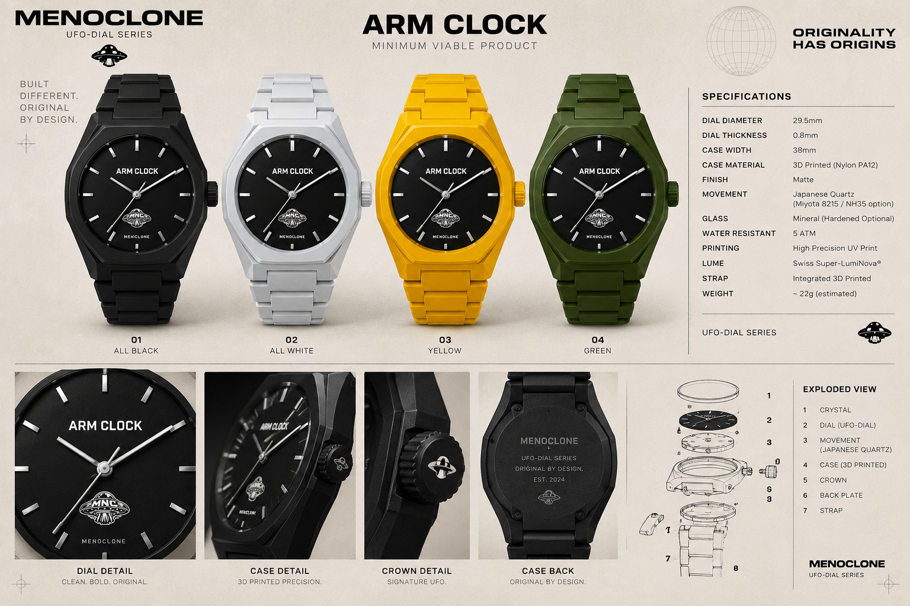

Meet ARM CLOCK, a 3D-printed watch concept built at the intersection of industrial design and wearable technology. Preview the prototype directly on your wrist through your phone camera.
Try on ARM CLOCKChoose a wrist, allow camera access, then hold your hand and wrist in view. The prototype will track the detected wrist in real time.
Prototype note: browser-based wrist tracking is an experimental visualization. Fit, scale and alignment can vary by device, lighting and camera angle. For production-grade try-on, calibrate the 3D model origin/rotation and consider a dedicated WebAR SDK.
ARM CLOCK explores what a watch can become when rapid prototyping, 3D printing and digital interaction are treated as one design system.
